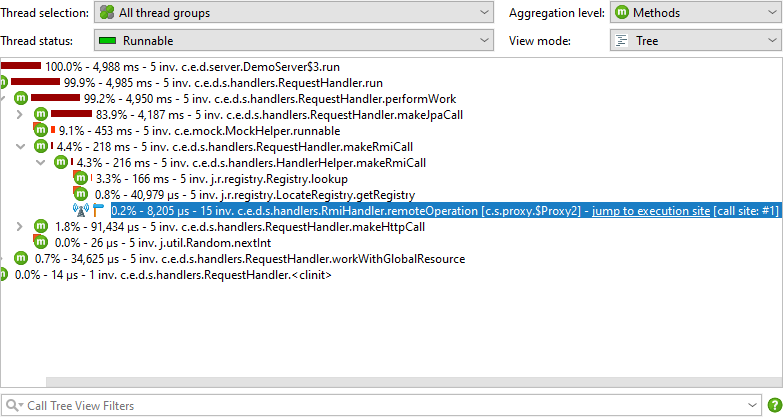
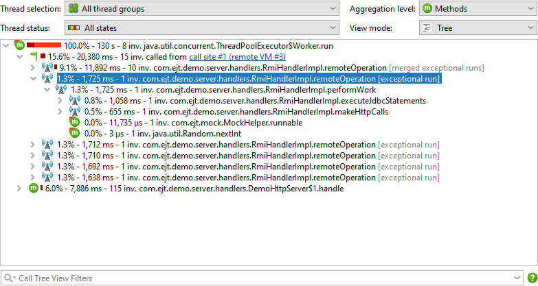

Asynchronous execution of tasks is a common practice, both in plain Java code and even more so with reactive frameworks. Code that is adjacent in your source file is now executed on two or more different threads. For debugging and profiling, these thread changes present two problems: On the one hand, it is not clear how expensive an invoked operation is. On the other hand, an expensive operation cannot be traced back to the code that caused its execution.
JProfiler provides different solutions to this problem depending on whether the call stays in the same JVM or not. If the async execution takes place in the same JVM that invokes it, the "Inline Async Executions" call tree analysis calculates a single call tree that contains both call sites as well as execution sites. If a request to a remote JVM is made, the call tree contains hyperlinks to call sites and execution sites, so you can seamlessly navigate both ways between different JProfiler top-level windows that show profiling sessions for the involved JVMs.
Enabling Async And Remote Request Tracking
Async mechanisms can be implemented in various ways and the semantics of starting tasks on a separate thread or in a different JVM cannot be detected in a generic way. JProfiler explicitly supports several common asynchronous and remote request technologies. You can enable or disable them in the request tracking settings. By default, request tracking is not enabled. It is also possible to configure request tracking in the session startup dialog that is shown directly before a session is started.
In JProfiler's main window, the status bar indicates if some async and remote request tracking types are enabled and gives you a shortcut to the configuration dialog.
JProfiler detects if an async request tracking type that is not activated is used in the profiled JVM and shows you a notification icon next to the async and remote request tracking icon in the status bar. By clicking on the notification icon, you can activate the detected tracking types. Async and remote request tracking can produce substantial overhead and should only be activated if necessary.
Async Tracking
If at least one async tracking type is activated, the call tree and hot spot views for CPU, allocation and
probe recording show information about all activated tracking types together with a button that calculates the
"Inline Async Executions" call tree analysis. In the result views of that analysis, the call tree of all async
executions is connected with the call sites by way of an
 "async execution" node.
By default, the async execution measurements are not added to the ancestor nodes in the call tree.
Because it is sometimes useful to see aggregated values, a check box at the top of the analysis allows you to
do that where appropriate.
"async execution" node.
By default, the async execution measurements are not added to the ancestor nodes in the call tree.
Because it is sometimes useful to see aggregated values, a check box at the top of the analysis allows you to
do that where appropriate.
The simplest way to offload a task on another thread is to start a new thread. With JProfiler, you can follow a thread from its creation to the execution site by activating the "Thread start" request tracking type. However, threads are heavy-weight objects and are usually reused for repeated invocations, so this request tracking type is more useful for debugging purposes.
The most important and generic way to start tasks on other threads uses executors in the
java.util.concurrent package. Executors are also the basis for many higher-level third party
libraries that deal with asynchronous execution. By supporting executors, JProfiler supports a whole class of
libraries that deal with multi-threaded and parallel programming.
Apart from the generic cases above, JProfiler also supports two GUI toolkits for the JVM: AWT and SWT. Both
toolkits are single-threaded, which means that there is one special event dispatch thread that can manipulate
GUI widgets and perform drawing operations. In order not to block the GUI, long-running tasks have to be
performed on background threads. However, background threads often need to update the GUI to indicate progress
or completion. This is done with special methods that schedule a Runnable to be executed on the
event dispatch thread.
In GUI programming, you often have to follow multiple thread changes in order to connect cause and effect: The user initiates an action on the event dispatch thread, which in turn starts a background operation via an executor. After completion, that executor pushes an operation to the event dispatch thread. If that last operation creates a performance problem, it's two thread changes away from the originating event.
Finally, JProfiler supports Kotlin coroutines, Kotlin's multi-threading solution that is implemented for all Kotlin backends. The async execution itself is the point where a coroutine is launched. The dispatching mechanism of Kotlin coroutines is flexible and can actually involve starting on the current thread, in which case the "async execution" node has an inline part that is then reported separately in the text of the node.
Suspending methods can interrupt the execution which is then possibly resumed on different threads. Methods where suspension was detected have an additional "suspend" icon with a tooltip that shows the number of actual calls versus the semantic invocations of the method. Kotlin coroutines can be suspended deliberately, but because they are not bound to threads, the waiting time will not appear anywhere in the call tree. To see the total time taken until a coroutine execution is finished, a "suspended" time node is added below the "async execution" node that captures the entire suspension time for the coroutine. Depending on whether you are interested in the CPU time or in the wall clock time of async executions, you can add or remove those nodes on the fly with the "Show suspended times" check box at the top of the analysis.
Tracking unprofiled call site
By default, both executor and Kotlin coroutine tracking only track async executions where the call site is in a profiled class. This is because frameworks and libraries can use these async mechanisms in a way that is not directly related to the execution of your own code and the added call and execution sites would just add overhead and distraction. However, there are use cases for tracking unprofiled call sites. For example, a framework can start a Kotlin coroutine on which your own code is then executed.
If such call sites in unprofiled classes are detected, the tracking information in the call tree and hot spot views shows a corresponding notification message. In live sessions, you can switch on tracking for unprofiled call sites separately for executor and Kotlin coroutine tracking directly from those views. These options can be changed at any time on the "CPU profiling" step of the session settings dialog.
It is important to understand that Kotlin coroutines can only be tracked when their launch happened while CPU recording was active. If you start CPU recording later on, the async executions from Kotlin coroutines cannot be inlined. JProfiler will notify you just like for the detection of call sites in unprofiled classes. If you need to profile long-lived coroutines that are started at the beginning of the application, then using the attach mode is not an option. In that case, launch the JVM with the -agentpath VM parameter and start CPU recording at startup.
Remote Request Tracking
For selected communication protocols, JProfiler is able to insert meta-data and track requests across JVM boundaries. The supported technologies are:
- HTTP: HttpURLConnection, java.net.http.HttpClient, Apache Http Client 4.x, Apache Async Http Client 4.x, OkHttp 3.9+ on the client side, any Servlet-API implementation or Jetty without Servlets on the server side
- Additional support for async JAX-RS calls for Jersey Async Client 2.x, RestEasy Async Client 3.x, Cxf Async Client 3.1.1+
- Web services: JAX-WS-RI, Apache Axis2 and Apache CXF
- RMI
- Remote EJB calls: JBoss 7.1+ and Weblogic 11+
In order to be able to follow the request in JProfiler you have to profile both VMs and open them at the same time in separate JProfiler top-level windows. This works with both live sessions as well as with snapshots. If the target JVM is not currently open, or if CPU recording was not active at the time of the remote call, clicking on a call site hyperlink will show an error message.
When tracking remote requests, JProfiler makes call sites and execution sites explicit in the call trees of the involved JVMs. A call site in JProfiler is the last profiled method call before a recorded remote request is performed. It starts a task at an execution site that is located in a different VM. JProfiler allows you to jump between call sites and execution sites by using hyperlinks that are shown in the call tree view.

Call sites have the same identity with respect to remote request tracking for all threads. This means that when you jump from call sites to execution sites and vice versa, there is no thread-resolution and the jump always activates the "All thread groups" as well as the "All thread states" thread status selection, so that the target is guaranteed to be part of the displayed tree.
Call sites and execution sites are in a 1:n relationship. A call site can start remote tasks on several execution sites, especially if they are in different remote VMs. In the same VM, multiple execution sites for a single call site are less common, because they would have to occur at different call stacks. If a call site calls more than one execution site, you can choose one of them in a dialog.
An execution site is a synthetic node in the call tree that contains all executions that were started by one particular call site. The hyperlink in the execution site node takes you back to that call site.
If the same call site invokes the same execution site repeatedly, the execution site will show the merged call tree of all its invocations. If that is not desired, you can use the exceptional methods feature to split the call tree further, as shown in the screen shot below.

Unlike execution sites which are only referenced from a single call site, call sites themselves can link to several execution sites. With the numeric ID of a call site, you can recognize the same call site if you see it referenced from different execution sites. In addition, a call site displays the ID of the remote VM. The ID of the profiled VM can be seen in the status bar. It is not the unique ID that JProfiler manages internally, but a display ID that starts at one and is incremented for each new profiled VM that is opened in JProfiler.